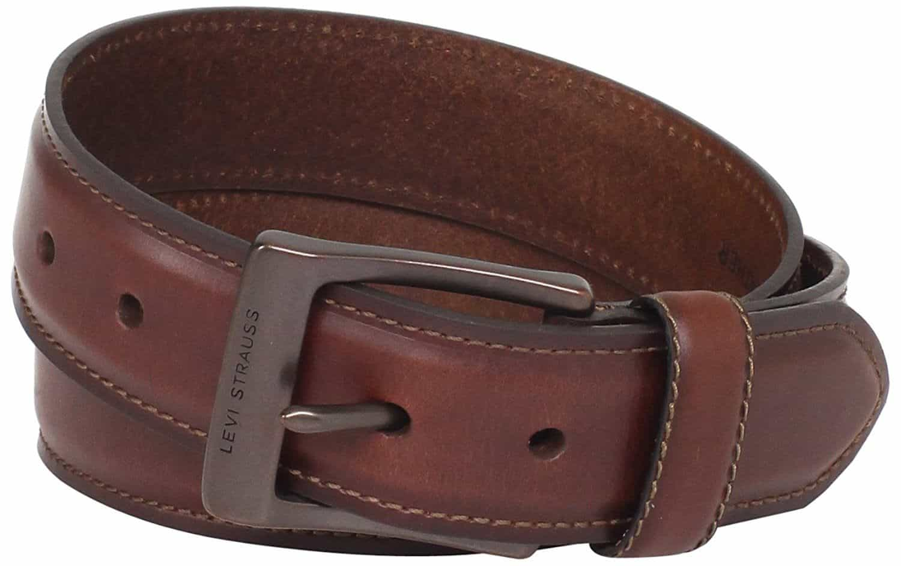
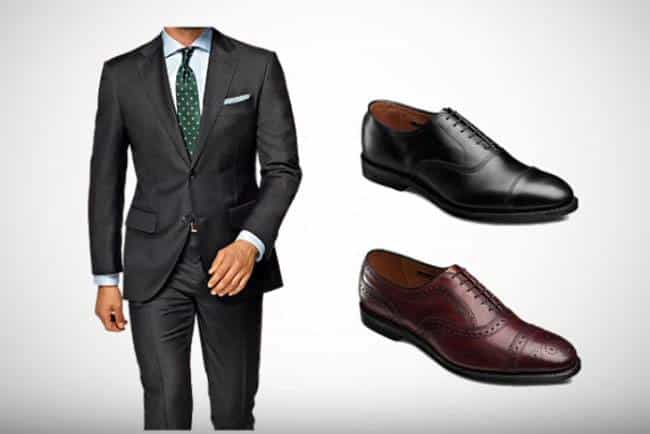
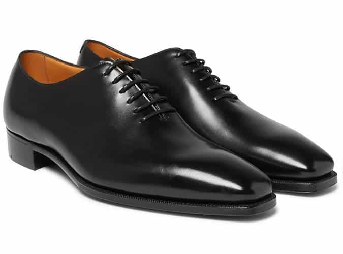
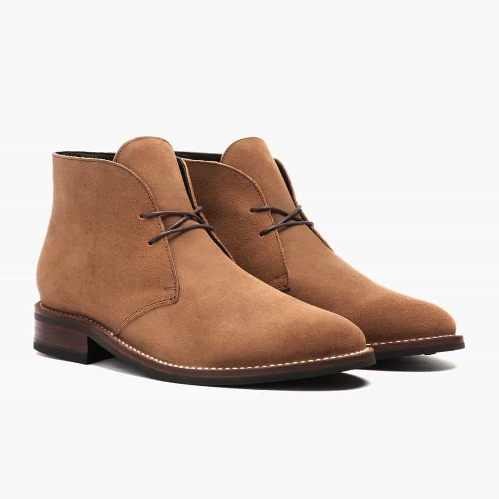
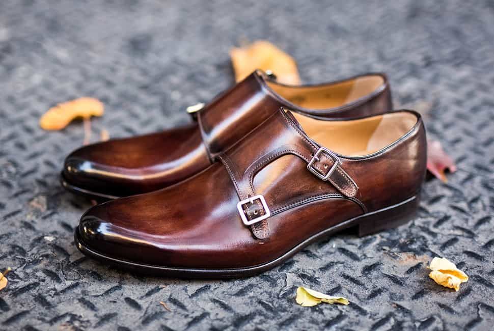

Sponsored Article is ROK's official account that publishes sponsored articles from advertisers. If you are interested hiring a sponsored article for your site, product, or service, visit our advertising page.


The following article is sponsored by Paul Evans Shoes.
Shoes are an often-overlooked but significant part of any man’s fashion game. Too many men will focus on their shirts, jackets, pants, and accessories, only to ruin their hard work by picking a pair of shoes that’s either cheap or clashes with their outfit. It’s very easy to undermine a quality look or outfit with a poorly-chosen accessory or an out-of-place color.
If clothes make the man, shoes are the foundation (both literal and metaphorical) of how you portray yourself to the world. Here are some easy tips on improving your shoe game…

Fashion is all about the details. Accessorizing properly can take your outfit from average to stellar, and one of the easiest ways to accessorize is to use items that match. People who lay eyes on you will notice these details, making you look sharper and more on-the-ball. Mismatched colors are one of the fastest ways to wreck an otherwise good outfit.
Many men own leather belts for both their reliability and stylishness, so why not add a pair of leather shoes to the mix? Using a pair of shoes that matches the color and material of your belt is an easy way to enhance your look. The synchronicity between your belt and your shoes will turn heads and give your look the extra oomph that it needs.

One of the biggest ways that men screw up when it comes to fashion is by picking elements that clash. That suit or pair of shoes might look good in isolation, but when you combine them, it’s like putting a scoop of ice cream on top of a slice of pizza. In order to truly look good, you need to make sure all parts of your outfit form a cohesive, visually interesting whole. This means choosing colors that look good when you put them together.
One way you can pull this off is by picking a pair of shoes that matches your suit or outfit. Brown and oxblood shoes tend to pair very well with navy and grey suits and slacks. If you have a dark suit or set of slacks, you should pair it with a darker shade of brown shoe, while clothes that have a lighter color should use a mid to light shade of brown. If you have a black suit, wear black shoes. These tips may sound minor, but they can make all the difference in your overall presentation.

When you’re wearing a suit and tie, you’re cutting a conservative image, so you need a conservative type of shoe to match. Oxford shoes are the most conservative type of shoe out there, making them ideal whenever you need to dress up. According to Paul Evans, cap-toe, semi-brogue, and whole-cut Oxfords are the best types of shoes to use when you’re in a suit and tie. Again, this seems like a small deal, but these little details add up when it comes to your image.

When you’re dressing down a bit, you can afford to be more experimental when it comes to your shoe selection. Slacks, denim, and other casual styles can be paired with Chelsea or chukka boots, loafers, monk straps, and other types of shoes. Don’t go overboard—you still want to pick a shoe that matches your overall look—but don’t feel too constrained, either. Feel free to try out different styles so you can find one that matches your appearance and personality.

When it comes to shoes, you can’t afford to be cheap. Paul Evans’ line of shoes provide the perfect mix of comfort, style, and affordability. Their high-quality footwear is an ideal way to improve your personal fashion.
Manufactured in Italy and designed in New York, Paul Evans represents the pinnacle of men’s footwear, enabling you to step your shoe game up easily. All Paul Evans shoes are made from the finest Italian calfskin leather and are painted by hand to look as beautiful and high-quality as possible. Paul Evans shoes are also blake-stitched, making them both comfortable to wear and easy to resole. They are designed to last for years due to their durable leather and expert Italian construction.
Not only that, Paul Evans shoes are affordable due to their direct-to-consumer business model. There’s no retail markup: you buy direct from Paul Evans and your order is shipped to you. Shipping and returns are free, and the company also boasts a 365-day return policy. Paul Evans also offers 0% financing with payments as low as $36 per month. Return of Kings readers can use coupon code “ROK50” at checkout for $50 off any pair of shoes.
If you’re looking for a shoe to get started with, the Martin wholecut is Paul Evans’ most popular shoe and a great selection for grooms and groomsmen. The marrone (brown) colorway is best paired with midnight navy tuxedos and suits, while the nero (black) colorway is an ideal complement for black tuxes and suits. Whether you choose the Martin wholecut or another shoe, Paul Evans’ line of shoes are a fantastic way to invest in yourself.
Shoes are an important part of any man’s fashion arsenal, one he can’t afford to neglect. By implementing some simple changes to your shoe choices, you can enhance your look and improve your fashion sense, whether you’re at work, on a date, or simply going about your day. Upping your shoe game is an easy process that pays dividends for the fashion-conscious man. Click here to visit the Paul Evans web store.